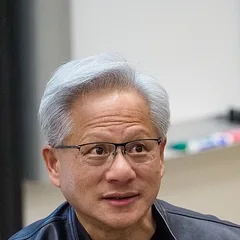
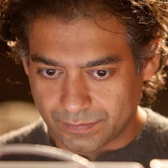
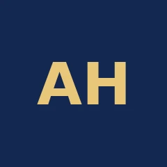
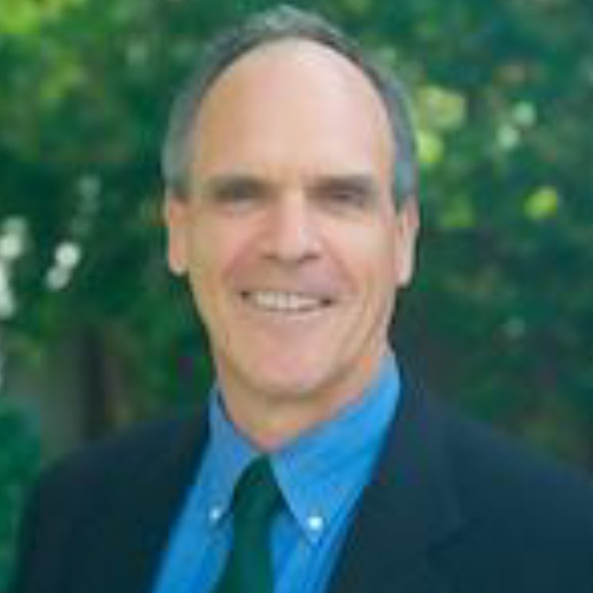
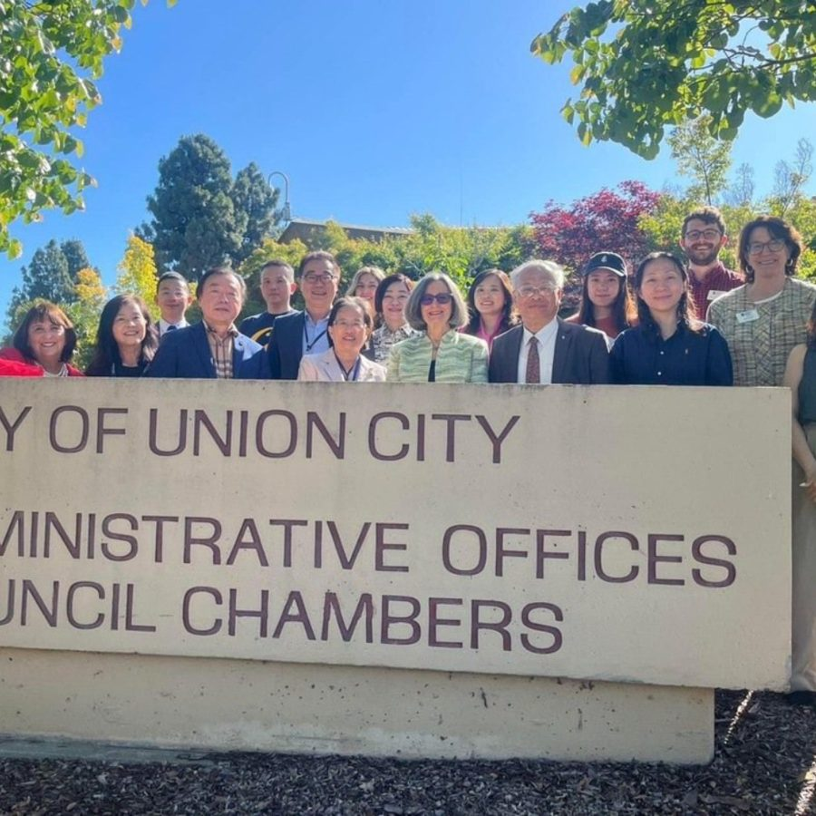
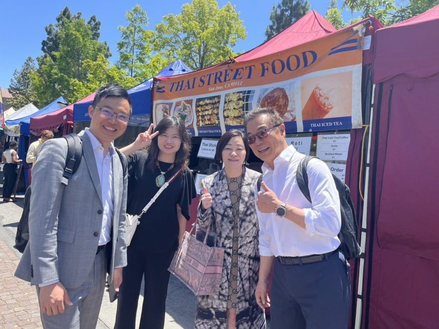
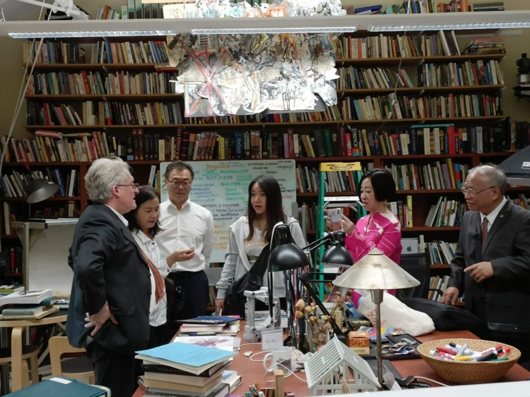
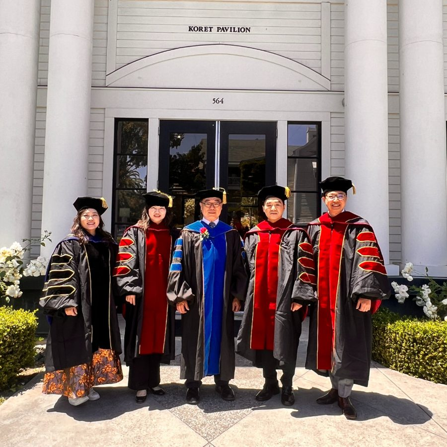

黃仁勳Jensen Huang
NVIDIA 創辦人暨執行長
「你不會被 AI 搶走工作，但你會被懂得使用 AI 的人搶走工作。」
“You're not going to lose your job to an AI, but you're going to lose your job to someone who uses AI.”
Milken 全球會議・2025-05

「你不會被 AI 搶走工作，但你會被懂得使用 AI 的人搶走工作。」
“You're not going to lose your job to an AI, but you're going to lose your job to someone who uses AI.”
Milken 全球會議・2025-05
「如果現在要我對一群大學生說話，我會告訴他們：把這些 AI 工具練到極度、不可思議地熟練。」
“If I was to talk to a class of undergrads right now, I'd be telling them to get really, unbelievably proficient with these tools.”
世界經濟論壇達沃斯年會・2026-01

「重點不再是資淺或資深，而是『會用 AI』還是『不會用 AI』。」
“It's not about junior vs senior, it's about “good with AI” vs “not good with AI.”
X 貼文・2026-03-04

「學習讓你變得有用，也讓你得到想要的。『學會如何學習』、練習它、精通它，應該是第一優先。」
“Learning allows you to be useful and get what you want. It should be a top priority to learn how to learn, practice it, and master it.”
X 貼文・2025-07-17

「成功停在你不會的地方，所以學會自己想辦法，是最有價值的技能。」
“Success stops where you don't know how to do something. Which makes learning to figure it out the most valuable skill you can learn.”
X 貼文・2025-08-22
在這個 AI 顛覆、全球市場重新洗牌的時代，許多優秀的企業家面臨著同樣的瓶頸：
AI 讓知識變便宜，
讓判斷變昂貴。
擁有碩士或EMBA已經是標配，如何在名片上展現出獨特性的學術地位？
想對接矽谷最新的商業模式與資金，卻苦無敲門磚，始終在核心圈外徘徊？
身為企業決策者，無法拋下公司出國兩三年進修，難道就註定與世界頂尖學府無緣？
當AI能回答所有MBA的理論與EMBA的實務，傳統學歷正快速貶值。你需要的不再是書本知識，而是頂層決策視野與新興技術洞察，這才是 AI 無法取代的競爭力！
如果你點頭了，這場說明會將是為你準備的...轉型劇本立即聽教授分享 →
全球唯一整合了美國三大名校資源，打破傳統學制藩籬，為你打造一條直通矽谷的快速通道。
由美國矽谷研究院與史丹佛、柏克萊、加州州立大學合作開設的研究中心級專案，用 8 個月把矽谷的 AI 決策思維帶回你的公司。
一次性獲得 史丹佛 (Stanford)、柏克萊 (Berkeley)、加州州大 (CSU) 三所世界頂尖名校頒發的官方結業證書。訪問學者／博士後於結業後一年內發表期刊，可再取得第 4 張。
取得「博士後研究員 (Post-doc)」或「訪問學者 (Visiting Scholar)」頭銜，這是高於學位的學術榮譽，直接提升您的行業話語權。
8個月完成學程。不需離職、不需長住美國，即可與矽谷大師面對面。
透過華沃教育的獨家推薦通道，免語言成績、免筆試，我們看重的是您的職業成就與實務經驗。
2027的未來十年競爭，不再是比誰更努力，而是比誰站得更高。不用羨慕別人的成功，現在，輪到你了！
2027 第 9 期・12 人即開班
版面位置有限，僅列部分師資；2027 師資以校方公告為準。

Pegasus 創投合夥人，專注 AI、量子計算等深度科技投資；曾帶領 2 家公司上市。

宏觀經濟學家與經濟史學家，柏克萊傑出教學獎得主，著有《宏觀經濟學作為第二語言》。

12 年 MBA 教學經驗，曾任西門子高層；專精領導力發展、組織變革與競爭性行銷。

史丹佛法學博士，專研 AI 與法律；史丹佛醫學院 SPARK 創新計畫顧問。
全球產業轉移下的競爭再定義，以及歷屆學員如何走進美國產官學界與矽谷企業參訪。
直接公開我們的師資陣容！包括史丹佛大學教授Barry Katz 講授「設計思維」、加州柏克萊大學Bill Reichert 傳授「企業領導力」及 IBM 高層分享的「全球新興技術」趨勢...等精彩內容！
為什麼越來越多上市櫃老闆選擇「訪問學者」或「博士後研究」而非再讀一個博士或MBA呢？深度解析學位體系與國際進修的差異與紅利！
聽完說明會當下預約諮詢，我們將提供 2027年的「創新企業與卓越人才獎學金」申請名額給你！(獎學金名額每年限額，盡請把握機會)；獎學金原則上僅適用 10 月底前送件
兩種赴美行程，擇一或都參加。以下為歷屆活動照片。
美國矽谷研究院（SVRI）主辦的總裁研習認證班：史丹佛教授與矽谷企業領袖授課，主題涵蓋 AI 與前沿科技趨勢、Design Thinking 設計思維、創新領導與未來決策；含史丹佛校園參訪、Arrillaga Dining Commons 校園午餐、創業生態體驗與國際交流。【待確認】2027 日期與費用
每年 10 月底舉行，學員可赴美參加：史丹佛、柏克萊校園課程、產官學參訪交流、全球學術論壇成果發表與結業典禮（行程安排與費用另計）。




＊照片取自華沃過往活動；2027 實際行程依校方正式入學通知為準
費用說明：申請費 NT$8,000 於送件時繳交，任何審核結果皆不退還；台灣初審通過後簽約繳納全額學費，再送美國三校審核，若美方審核未通過，學費全額退還。